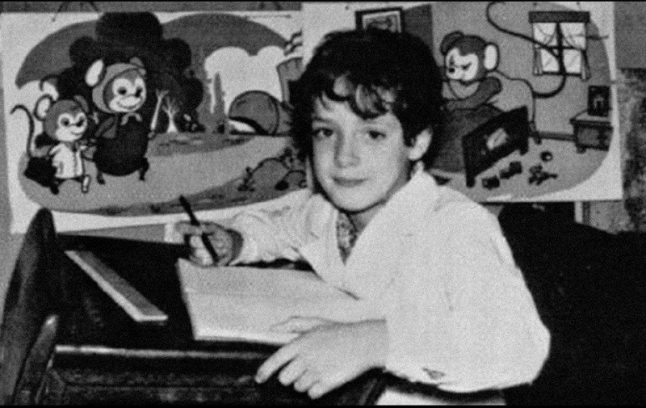
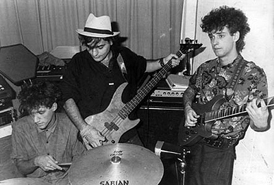

Soda Stereo fue una banda argentina de rock formada en 1982 en Buenos Aires. Estuvo integrada por Gustavo Cerati (voz y guitarra), Zeta Bosio (bajo) y Charly Alberti (batería).
Desde sus inicios, el grupo se destacó por su propuesta innovadora dentro del rock en español, combinando influencias del new wave, el post-punk y el pop rock. En sus primeros años tocaron en pequeños escenarios hasta que lograron firmar su primer contrato discográfico. Con el paso del tiempo, se convirtieron en una de las bandas más influyentes de América Latina. Su impacto fue tan grande que muchos los consideran pioneros en la internacionalización del rock latino.
“Soda Stereo se formó justo antes de la guerra de Malvinas, entre febrero y marzo de 1982, pero la historia viene de antes...”, Contestaba Gustavo Cerati cuando le preguntaban por los comienzos de Soda “Nos conocimos con Zeta estudiando Publicidad en la Universidad del Salvador. A los dos nos copaba la música y habíamos hecho algunas cositas sin importancia”.
Esas “cositas sin importancia” fueron las que de alguna manera posibilitaron llegar a 1982 con cierto trabajo previo. Gustavo Adrián Cerati, que había nacido el 11 de agosto de 1959, aprendió a tocar la guitarra a los nueve años. “A pesar de ser zurdo, por una cuestión práctica la agarré como diestro”, contaba. Zurdo, pero diestro, aprendió primero a tocar los típicos temas sencillos para principiantes, como “Yo vendo unos ojos negros”. A los doce años armó un trío con dos amigos que vivían en el barrio de Caballito. Ensayaban en el sótano de una gran casa en avenida Rivadavia y tocaban en fiestas.

A comienzos de los años 1980, Gustavo Cerati, de 22 años, y Héctor «Zeta» Bosio, de 23 años, compartían los mismos gustos y sueños musicales y comenzaron una búsqueda para integrar un grupo punk rock inspirado en The Police, que visitó Argentina en 1980 y The Cure , con temas propios en español. Formaron, sucesivamente, el grupo Stress, junto a Charly Amato, Sandra Baylac y el baterista Pablo Guadalupe, y Proyecto Erekto junto a Andrés Calamaro, que no cubrieron sus expectativas.
En el verano de 1981, ambos coincidieron en Punta del Este (Uruguay): Cerati con su Sauvage, una banda de covers de música disco, y Bosio con The Morgan , una banda integrada también por Sandra Baylac, Hugo Dop, Christian Hansen, Pablo Rodríguez, Charly Amato, Osvaldo Kaplan y Andrés Calamaro. Debido a una serie de peripecias, Cerati y Bosio establecieron un estrecho vínculo musical y de amistad que los llevó a comenzar a tocar juntos.
